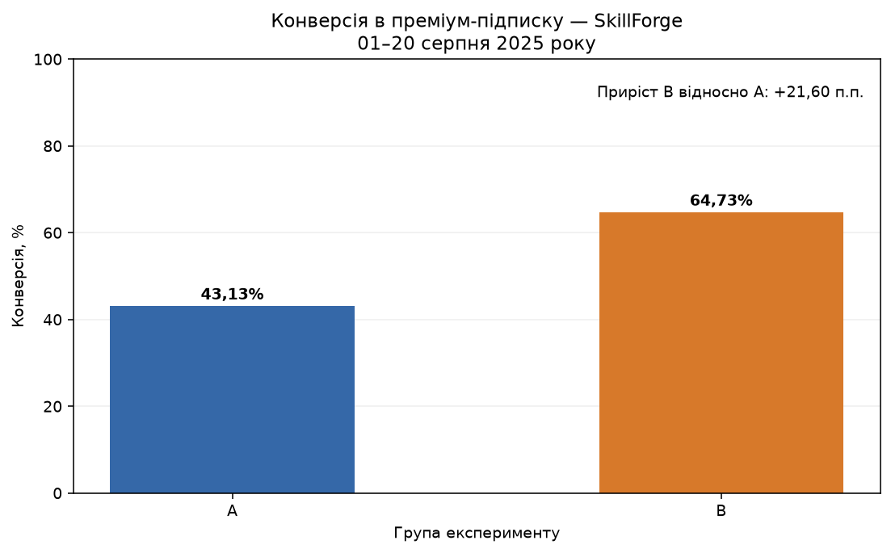
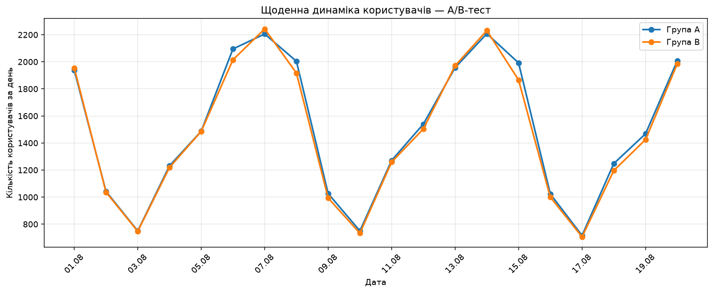
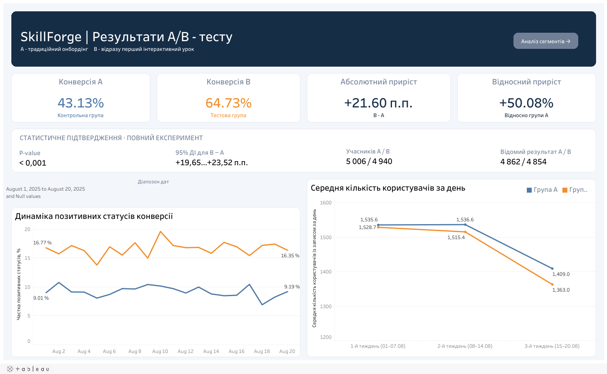

Новий онбординг B має вищу конверсію
64,73% у B проти 43,13% у A. Перевага зберігається навіть за найгіршого для B розподілу невідомих статусів.
Рекомендація — розглядати B для поетапного впровадження після перевірки трекінгу та з контролем бізнес-показників.
Конверсія — серед 9 716 користувачів із визначеною групою та відомим підсумковим статусом за весь експеримент.
Що перевіряє тест
SkillForge — навчальна платформа. Гіпотеза: автоматичний перехід до першого інтерактивного уроку підвищує конверсію в преміум-підписку.
Спочатку — перелік тем
Традиційний сценарій після реєстрації.
5 006 учасниківОдразу — інтерактивний урок
Новий онбординг «Миттєве занурення».
4 940 учасниківНавчальні змодельовані дані, варіант 42. Період: 01–20 серпня 2025 року.
Перевага B підтверджена статистично

| Вибірка | A | B |
|---|---|---|
| Відомий статус | 4 862 | 4 854 |
| Підтверджена конверсія | 2 097 | 3 142 |
| Невідомий статус | 144 | 86 |
Перевага є в основних країнах і пристроях
Для планшетів приріст становить +25,33 п.п.; для мобільних пристроїв — +21,66 п.п.; для комп’ютерів — +21,32 п.п. Серед п’яти основних країн приріст лежить від +15,64 п.п. у Франції до +24,81 п.п. у Бразилії.
Щоденні коливання A і B схожі

Найнижчі значення припадають на неділі, найвищі — на четверги. Перші два періоди відносно стабільні; середнє третього нижче в обох групах.
Третій період містить шість днів і не має четверга. Склад днів тижня частково пояснює нижче середнє. Статистичну рівність трендів не перевіряли.
Тижневі графіки та пояснення →Від сирих записів до перевіреної вибірки
| Крок | Результат |
|---|---|
| Початкові щоденні записи | 61 002 |
| Видалення 1 196 повних дублікатів | 59 806 |
| Видалення 60 записів поза експериментом | 59 746 |
| Користувачі після очищення | 10 000 |
| З визначеною групою A/B | 9 946 |
20 негативних значень days_on_product замінено на пропуски. 501 невідомий щоденний статус збережено: невідоме значення не є нулем.
Підготовка даних: перевірки й очищення →Що означає конверсія
Один користувач має підсумковий статус за весь період: 1 — є підтверджена конверсія; NULL — підтвердження немає, але є невідомі статуси або немає записів; 0 — усі наявні статуси відомі та нульові.
Конверсія = кількість користувачів зі статусом 1 / кількість користувачів зі статусом 0 або 1.
v_user_conversion містить один рядок на користувача; v_daily_agg — один рядок на дату та групу. Щоденна частка позитивних статусів має інший знаменник і не замінює головну метрику.
Переглянути повний проєкт
EDA та очищення →
Якість даних, пропуски, дублікати, типи та підготовка CSV.
СТАТИСТИКА · БІЗНЕСA/B-аналіз →
Конверсія, значущість, інтервал, чутливість, сегменти та висновки.

Відкрити інтерактивний Tableau ↗